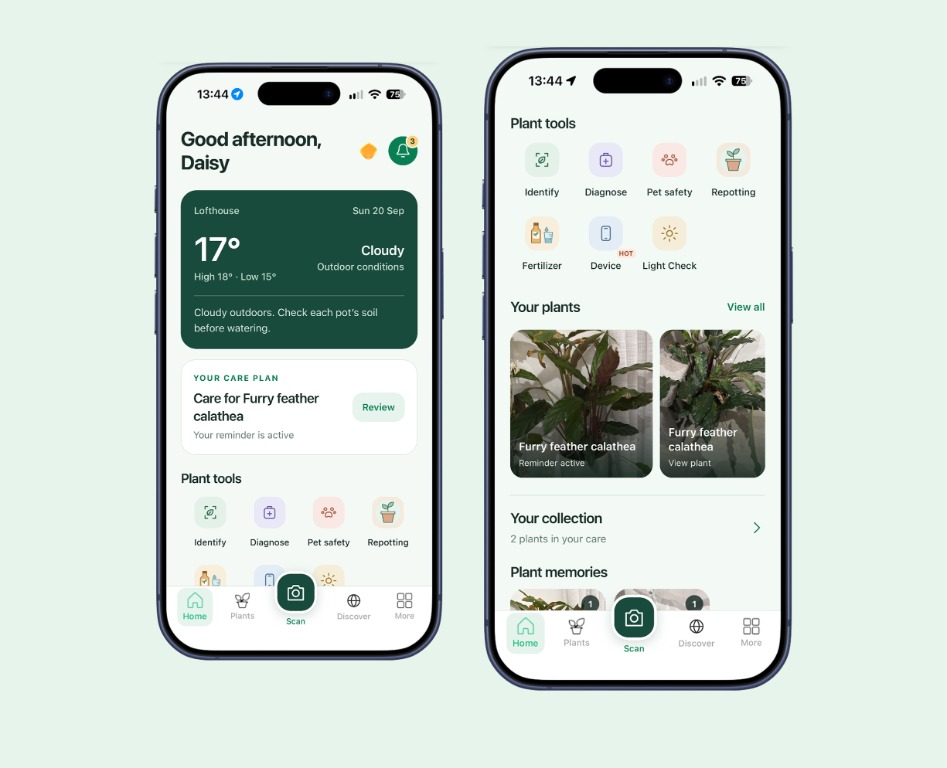
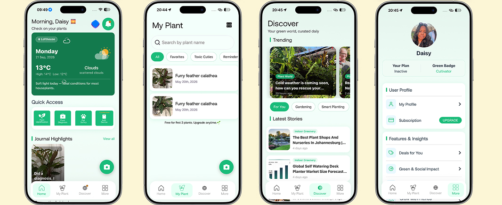
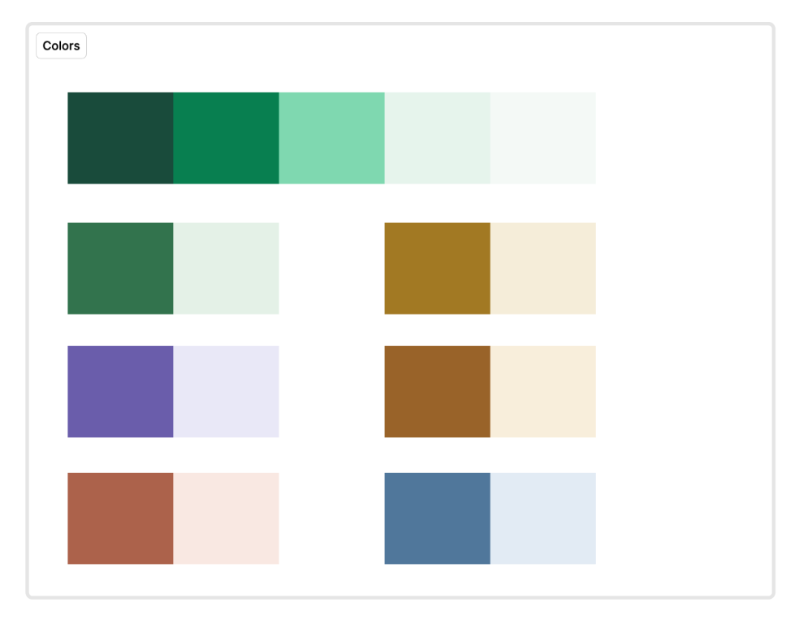
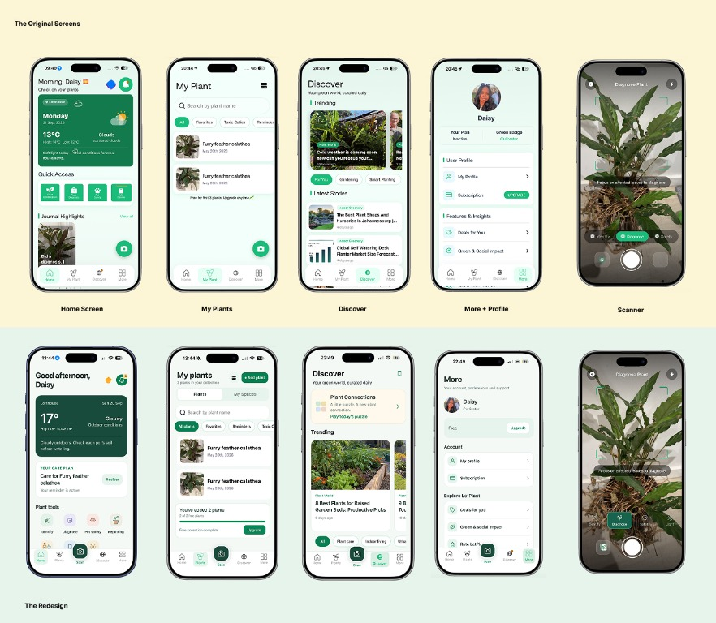
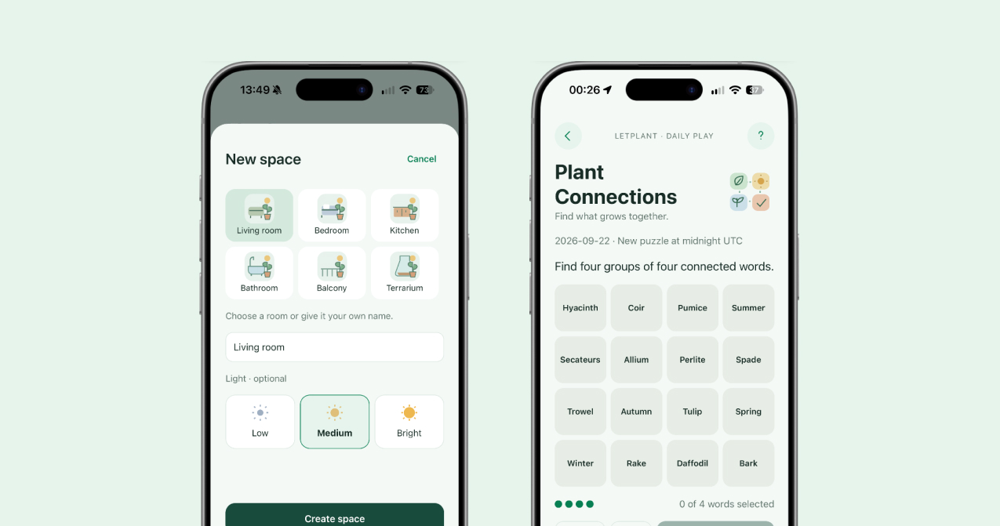
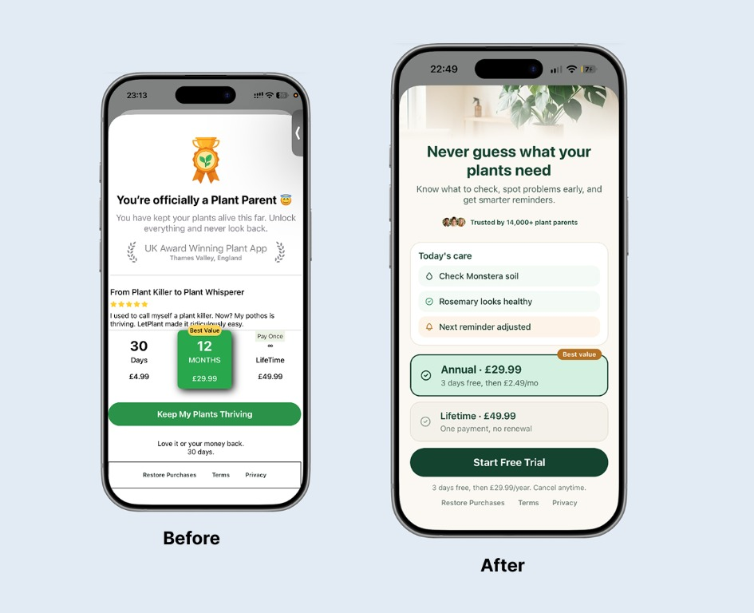

Room to elevate
The design was already capable, but there was a shared feeling it could be more sophisticated and premium.
Selected work / 01
A more thoughtful, premium experience for an AI plant-care app — helping people care for their plants and making the app’s most valuable features easier to discover.
01 · The project
LetPlant is an AI plant-care app that helps people identify their plants, diagnose problems, and know how to care for them, with 14,000+ users across iOS and Android. I led a visual redesign: maturing the look and feel, refining the core flows, and rebuilding the paywall. Alongside surfacing the app’s most valuable features, that work helped increase revenue by around 20% month-on-month.

02 · The product
LetPlant turns your camera into a plant expert: scan a plant to identify it, diagnose problems, and get care advice tailored to your space. It also helps you learn more about plants in general, and how to be the best plant parent.
03 · The challenge
LetPlant worked and had a real audience, but a few things were holding it back:
The design was already capable, but there was a shared feeling it could be more sophisticated and premium.
LetPlant is for anyone with a plant, so it needed to feel mature and broadly relatable, not niche.
Plenty of users, but very few upgraded to the full subscription.
Some of the most useful features were buried, so people never discovered what they were missing.
Mature the look and feel, and surface the features that drive value, giving people a clear reason to upgrade.

04 · My contribution
I led the redesign of LetPlant, owning the creative direction and experience design across the app.
I set the visual direction and design principles for the redesign, maturing the look and feel into something more sophisticated and broadly appealing.
I designed the end-to-end experience for both the existing flows and the new features we introduced, across home, scanning, diagnosis, discovery, the plant puzzle, and the paywall.
I worked closely with the team to take the work from concept through to live screens, balancing craft with what could realistically be built and released.

05 · The approach
The redesign was guided by four principles:
Elevate the visual language so the app feels more sophisticated and trustworthy, while keeping its warmth.
Stay neutral and broadly relatable, so anyone with a plant feels at home, not just enthusiasts.
More breathing room, a softer palette, and a stronger hierarchy, so the app feels effortless to move through.
Make the most useful features easy to find, so people can see what they’re getting and why it’s worth upgrading.
06 · The solution
Scan moved into the centre of the nav bar.
Why: Scanning is the core action, so it should always be one tap away.
Added a daily care tip, a personal care plan, and a clearly labelled Plant tools grid.
Why: The home screen now answers, “What should I do for my plants today?”
Added My Spaces and a free-collection progress card with an upgrade option. Spaces let people organise plants by where they live, and give the experience room to grow alongside future SDESA hardware.
Why: The upgrade appears when it’s relevant, instead of being buried in small text.
Added a daily plant puzzle above the content.
Why: A small, fun reason to come back every day.

My Spaces helps people organise plants by room, while a daily puzzle adds a playful moment to the Discover experience.

07 · Making value clear
The old paywall opened with a badge (“You’re officially a Plant Parent”) and three plans squeezed side by side. It looked busy, and it didn’t really tell people what they’d be paying for.
So we started with what people actually care about: “Never guess what your plants need.” Underneath, a small “Today’s care” preview shows what premium does day to day, like checking soil or adjusting reminders, before we ask for anything.
We cut the plans down to two, highlighted Annual, and added a 3-day free trial, so trying it felt low-risk. The terms sit right under the button in plain words, because nobody likes being surprised by a charge.
Together with the rest of the redesign, revenue went up around 20% month on month.

08 · What changed